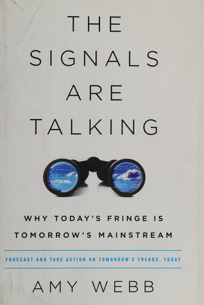
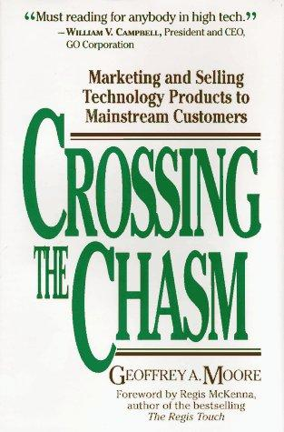
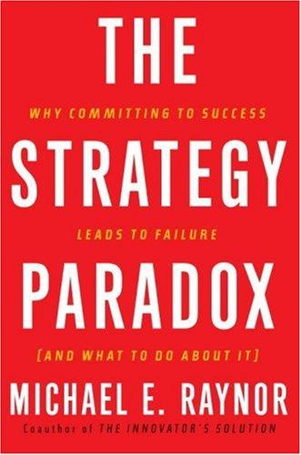
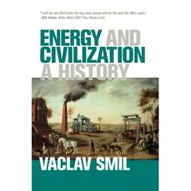

Módulo 01 / Apartado 3 de 5
Los atractores, y el lío de la curva de Gartner
Qué son las fuerzas que están moviendo el tablero, cómo se distingue una de una moda pasajera, y por qué el gráfico que todo el mundo usa para eso está mal atribuido y peor usado.
Primero: qué es un atractor
La palabra viene de la física y de la teoría de sistemas, donde un atractor es el estado hacia el que un sistema tiende a irse solo, aunque lo empujes en otra dirección. Si sueltas una canica dentro de un cuenco, dé donde dé, acaba en el fondo. Ese fondo es el atractor.
Recuenco usa la palabra en un sentido parecido pero aplicado a la sociedad y a los negocios. Un atractor es una fuerza de fondo, lenta, que lleva años empujando y que va a seguir empujando, y que reordena el tablero de casi cualquier sector aunque tú no hagas nada al respecto. No es una moda ni una noticia. Es la corriente por debajo del oleaje.
La guía docente de la UNIR habla de cuatro atractores. En las turras y en las charlas recientes ya van cinco. Que el número se mueva no es un despiste: la lista se revisa cuando la realidad la obliga, y él mismo ha ido publicando actualizaciones.
De esos cinco atractores, solo uno y medio son tecnológicos. El resto son cambios sociales, demográficos y culturales: cómo se comporta la gente, cuánta gente hay y de qué edad, y qué se considera aceptable.
Esto tiene una consecuencia práctica muy poco intuitiva para quien viene del mundo técnico: si quieres anticipar por dónde va a ir tu sector, te va a servir más leer antropología y sociología que el último informe de tendencias tecnológicas.
Distinguir una corriente de fondo de una moda
Aquí está el problema práctico. Todos los años aparecen quince tecnologías que van a cambiarlo todo, y catorce no cambian nada. Y hay mucha gente cobrando por convencerte de que la próxima sí.
La herramienta que casi todo el mundo usa para ordenar esto es la curva del hype. Si ya sabes lo que es, sáltate el recuadro. Si no, es donde empieza lo interesante.
Gartner es una consultora estadounidense enorme que se dedica, sobre todo, a vender informes sobre tecnología a empresas. Cuando un director de sistemas tiene que justificar ante su consejo por qué invierte en algo, muchas veces enseña un informe de Gartner. Ese es el negocio: vender criterio sobre el futuro.
Su producto más famoso es el Hype Cycle, la curva del hype o del entusiasmo. Es un gráfico donde colocan cada tecnología del momento en una curva con forma característica, según en qué punto de su vida social está. La curva tiene cinco tramos:
- Lanzamiento. Aparece la cosa. Cuatro enterados hablan de ella.
- Pico de expectativas infladas. Sale en todas partes, se le atribuye la solución de problemas que no tienen nada que ver, y todo el mundo anuncia que está «trabajando en ello».
- Valle de la desilusión. Los primeros proyectos fracasan, se ve que era más difícil de lo que parecía y el tema desaparece de las portadas.
- Rampa de consolidación. Sin ruido, la gente que sigue trabajando encuentra los usos donde de verdad sirve.
- Meseta de productividad. Se queda, se usa con normalidad y deja de ser noticia.
El ejemplo típico es blockchain: pico hacia 2017 con todo el mundo montando una criptomoneda, valle sobre 2019, y hoy en un uso mucho más modesto del que se anunció. Cambia el nombre por el que quieras y el patrón se repite.

El libro de esto The Signals Are TalkingEl libro de lectura de señales que recomienda con reservas: bueno para entender cómo se detectan las cosas antes de que pasen, flojo cuando promete que vas a predecir el futuro. Ese reclamo, dice, se lo pone el editor a todos. — Amy Webb, 2016
Ahora sí: las dos pegas de Recuenco
La primera es de autoría. Él sostiene que la curva no es de Gartner, sino de Ravi Kalakota, un autor que a finales de los noventa escribía sobre comercio electrónico y del que aprendió mucha gente de esa generación. Gartner la popularizó, dice, y la popularizó tanto que se quedó con el nombre.
Fui a comprobarlo y no encontré respaldo para esa atribución. Lo documentado es que la curva la introdujo Jackie Fenn, analista de Gartner, en enero de 1995, en un informe titulado When to Leap on the Hype Cycle. Es ella quien nombra las fases y dibuja el gráfico.
Sí existe un precedente reconocido: Howard Fosdick había acuñado antes la expresión hype curve, muy próxima. Pero de Kalakota no aparece nada en relación con esto.
Lo dejo escrito porque el criterio de esta web es que puedas comprobarlo todo, y porque conviene aplicarle a Recuenco la misma desconfianza que él pide que le apliques a Gartner. Que la atribución falle no toca su segunda pega, que es la de fondo y sigue en pie.
Esto podría parecer una anécdota de erudito, pero él le saca punta: Gartner adoptó esa curva porque le encajaba como un guante en su negocio, que consiste en vender previsiones. Y ahí hay un conflicto que conviene tener presente siempre. Cuando el que hace el pronóstico y el que te vende el camino cobran de lo mismo, el pronóstico vale lo que vale.
La segunda pega es más gorda. Las fases de la curva son intuitivamente correctas, cualquiera las reconoce. El problema es el cuándo. Saber que una tecnología pasará por un valle no te sirve de nada si no sabes si el valle es el año que viene o dentro de doce. Y el método de Gartner para calcular ese cuándo lo califica de acientífico.
ETA son las siglas de estimated time of arrival, la hora prevista de llegada. Aplicado aquí: cuándo va a adoptarse de verdad una cosa.
Recuenco dice abiertamente que sobre el cálculo del ETA no puede recomendar ningún libro, porque lo que sabe lo ha aprendido a golpes. Que un tipo que recomienda libros a todas horas admita que en la parte más difícil no tiene bibliografía dice bastante del estado del asunto.
Por qué se llega tarde o pronto
Su explicación de por qué fallan tantas previsiones es sencilla y bastante demoledora: la gente que pronostica mira la tecnología y no mira a las personas.
El ejemplo que usa es el microondas. El aparato existía mucho antes de meterse en las cocinas, y lo que tardó no fue la ingeniería, fue que la manera de comer de la gente cambiara lo suficiente como para que aquello tuviera sentido. De ahí la regla que conviene apuntar:
Las tendencias entran cuando la gente está lista, no cuando la tecnología está disponible.
Y el corolario para negocios, que él aplica al sector energético y a la banca: cuando una industria nota que algo va mal, casi siempre se lanza a digitalizarse. Es la reacción cómoda, porque se compra con dinero, no obliga a cuestionar a nadie y queda moderno. Si lo que ha caducado es la propuesta de valor, puedes gastarte lo que quieras en tecnología que el problema sigue intacto.
Y en diciembre de 2025 cambió la lista
Los cinco de la ilustración anterior —pandemia, nuevo orden mundial, clima, demografía, IA— son los que él llama «atractores del apocalipsis», y salen de la turra de los luditas. Están bien, pero no son su lista canónica.
La canónica es otra, la que enseña en sus charlas desde 2019, y es la que actualizó el 26 de diciembre de 2025 en un hilo fuera de carta. Ese hilo sí está en el archivo y este apartado no lo usaba. Aquí va, porque cambia cuatro de los cinco.
Su manera de pensar los atractores explica por qué la lista se mueve. Dice que se parecen a la vida de una estrella: aparición, consolidación, máximo tirón gravitatorio y colapso. La foto se va cambiando, aunque no rápidamente. Por eso una lista de atractores lleva fecha, como el yogur.
De los cambios, dos merecen comentario aparte.
- Relevance first
- Funde dos atractores que antes iban por separado —espacios hiperpersonales y personotecnia— en uno solo. Traducido: lo que va a decidir quién gana no es llegar a todo el mundo, es ser relevante para cada uno. Él avisa de que tiene implicaciones de primer nivel en los modelos de negocio tecnológicos y en la industria publicitaria, que es tanto como decir que le va a pasar por encima a media economía digital.
- Reshuffling de la jerarquía intelectual
- El completamente nuevo, y el más incómodo: se está recolocando quién cuenta como listo. Habilidades que valían mucho pasan a valer poco y al revés. Sus implicaciones, dice, son laborales y educativas — y en 2026 le dedicó seis semanas seguidas de hilos a eso mismo: escuelas de negocio, universidad e IA, educación obligatoria y altas capacidades en la tercera edad.
Y hay una respuesta suya que vale como lección de método. Le habían dicho que el atractor de la Agenda 2030 era el más flojo de los cinco. Su contestación es que no se han entendido las implicaciones: hemos dejado de creer colectivamente en ella y el desmontaje está a la vista, pero dirigió decisiones de toda índole durante una década.
Quédate con esto, que es lo que se traslada. Un atractor que se apaga no deja de haber mandado mientras estuvo encendido, y su desmontaje también mueve dinero y decisiones. Confundir «esto ya no se lleva» con «esto no importó» es una manera excelente de leer mal los diez años siguientes.
El atractor que manda ahora: el IA Chasm
En julio de 2026 desarrolló el que a día de hoy se está comiendo a los demás, y lo llamó «un concepto capital» que mucha gente percibe intuitivamente y nadie había explicitado. No está en la colección ordenada de turras, solo en su cuenta, así que aquí va con detalle.
De Geoffrey Moore y su Crossing the Chasm (1991), que es un clásico de márketing tecnológico. Moore parte de la curva de difusión de innovaciones de Everett Rogers y añade una cosa: el ciclo de adopción no es continuo. Hay un abismo.
A un lado, el mercado temprano: innovadores (≈2,5%) y visionarios (≈13,5%). Buscan ventaja disruptiva, toleran que la cosa esté a medias y hacen de evangelistas. Al otro, el mercado mayoritario: la mayoría temprana (≈34%) y las que van detrás. Son pragmáticos y piden otra cosa — producto completo, referencias de gente como ellos, riesgo bajo, retorno claro y soporte.
La tesis de Moore, y lo que la hace útil: lo que te funcionó para conquistar a los primeros es exactamente lo que te hace fracasar con los segundos.
Aplicado a la inteligencia artificial, el diagnóstico es demoledor y lo da con números: según los estudios que cita, entre el 62% y el 95% de los pilotos de IA nunca generan retorno significativo ni llegan a escalar. Miles de empresas hacen pruebas que salen bien y casi ninguna las convierte en capacidad operativa rutinaria.
Y su explicación no es tecnológica. Es que dentro de cada empresa se repite la misma división: los visionarios internos —gente de datos, perfiles digitales, áreas de innovación— empujan rápido e informal; y los pragmáticos internos —dirección de área, finanzas, operaciones, cumplimiento— piden integración con lo viejo, datos con gobierno, retorno demostrable, cambio de roles y riesgo regulatorio controlado.
Pero la aportación propia, la que Moore no tenía, es la siguiente.

El libro de esto Crossing the ChasmEl clásico del que sale el concepto: entre los visionarios y la mayoría pragmática hay un abismo, y lo que te sirvió para conquistar a los primeros es lo que te hunde con los segundos. De ahí salen la cabeza de playa y el «producto completo» — Geoffrey A. Moore · 1991
Fíjate en que las dos patologías son el mismo error con distinto signo: en las dos se renuncia a decidir un ritmo y se deja que lo marque el reloj que no controlas. Es la misma estructura que el aburrimiento y la ansiedad en el canal del flow, y la misma que los atractores frente a las modas de más arriba.
Cruzar el IA Chasm no es un evento. Es el resultado de un ritmo bien orquestado.
Y por qué esto es un atractor y no una moda. Porque el propio hilo lo conecta con todo lo demás: dice que el arco entero que dedicó a educación en 2026 son «manifestaciones del mismo fenómeno», las necesidades van a más revoluciones que las adaptaciones del sistema. Ese desfase entre dos velocidades es la forma que tiene hoy el atractor de las megatendencias tecnológicas.
Lo que se hace con eso —el ritmo estratégico, el reparto de esfuerzo y el desierto que hay que cruzar— no es leer una corriente de fondo, es implantar. Está en el módulo 5, que es el que se ocupa de que las cosas lleguen a pasar.
Lo que hay que llevarse de este apartado
- Un atractor es una corriente de fondo que reordena el tablero, no una moda.
- Son cinco, y solo uno y medio es tecnológico. Los demás son de gente.
- La curva del hype describe bien las fases y mal el calendario.
- Desconfía cuando el que pronostica también te vende la solución.
- Lo que retrasa una tecnología casi nunca es la tecnología.
Fuentes de este apartado
Las turras de las que sale
La turra de la última sección de este apartado, y la más reciente que se cita en todo el sitio. No está en el Turrero Post porque la colección se paró en febrero de 2026: solo está en su cuenta. Adapta el abismo de Geoffrey Moore a la adopción de IA, añade la tesis propia de los dos relojes con sus dos patologías, y propone el ritmo estratégico como solución. Es el preludio de un arco largo sobre personotecnia.
Los cinco atractores versión 2026Turra fuera de carta · 23 tweets · dic 2025La actualización de la lista canónica, y la turra que sostiene la segunda mitad de este apartado. Corta para lo que él acostumbra, y densa: cuenta de dónde viene la idea —borradores de 2014, primera formulación en 2016, primera charla pública en 2019—, cambia cuatro de los cinco atractores y defiende el de la Agenda 2030 de quienes lo daban por flojo. Anuncia que desarrollará los nuevos durante 2026.
Diferenciar a un atractor de un hype40 tweets · mar 2021El hilo central de este apartado. Contiene la atribución de la curva del hype a Ravi Kalakota, la crítica al método de Gartner para calcular cuándo pasan las cosas, y la regla de que los cambios grandes son sociales antes que tecnológicos. Termina con un aviso sobre leer solo a gente con la que estás de acuerdo.
Los cinco atractores llegando al mercado energético41 tweets · mar 2021Los atractores aplicados a un sector concreto, que es como mejor se entienden. Diagnostica las gasolineras como negocio de baja barrera intelectual y predice una pérdida fuerte de valor. De aquí sale la idea de que cuando el zeitgeist golpea a una industria, esa industria desaparece.
Los libros que se citan ahí dentro
Un método para detectar señales de cambio en los márgenes antes de que lleguen al centro. Recuenco lo recomienda con reserva expresa: bueno para entender cómo se detectan las cosas, flojo cuando promete que vas a predecir el futuro. Ese reclamo mágico, dice, se lo pone el editor a todos los libros de este género.

The Strategy ParadoxMichael Raynor · 2007La paradoja del título: las estrategias que producen los mayores éxitos son las mismas que producen los mayores desastres, porque las dos exigen comprometerse a fondo con una apuesta. Raynor propone gestionar eso con opciones estratégicas. Recuenco compra el diagnóstico y rechaza la solución, porque dice que viola la primera ley de Rumelt.

Energy and CivilizationVaclav Smil · 2017La historia de la humanidad contada a través de la energía que ha sido capaz de manejar, desde el músculo hasta los combustibles fósiles. Es un ladrillo denso y lleno de cifras, y es la mejor vacuna contra las previsiones alegres sobre transición energética. Bill Gates lo cita en todas partes.
Para ver
La charla donde desarrolla los cinco atractores uno por uno, con tiempo y sin el límite de caracteres de un hilo. Si este apartado te ha sabido a poco, aquí está la versión larga y contada por él.
Los 5 atractores actualizadosCPS Spain · sesión onlineLa revisión más reciente de la lista. Sirve para ver cómo se mueven los atractores con los años, que es justo lo que explica por qué la guía docente dice cuatro y él ya habla de cinco.